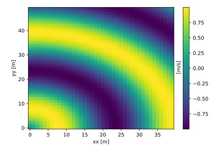
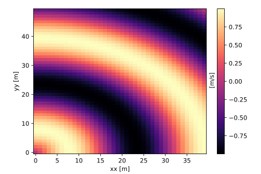
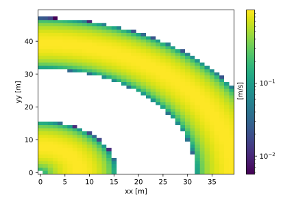
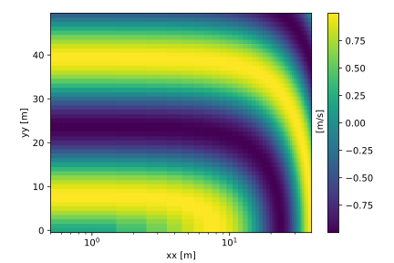
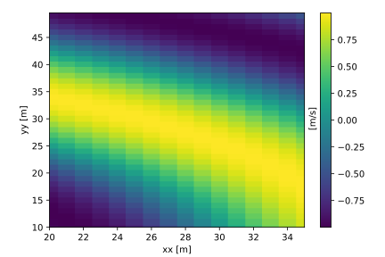
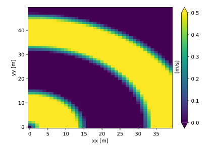
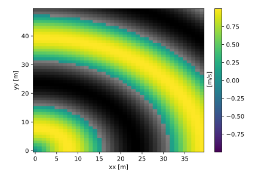

Image plot
Contents
Image plot#
[1]:
%matplotlib inline
import scipp as sc
import plopp as pp
pp.patch_scipp()
Basic image plot#
[2]:
da = pp.data.dense_data_array(ndim=2)
da.plot()
[2]:

Changing the colormap#
[3]:
da.plot(cmap='magma')
[3]:

Logarithmic colormap#
[4]:
da.plot(norm='log')
[4]:

Logarithmic axes#
[5]:
da.plot(scale={'xx': 'log'})
[5]:

Setting the axes limits#
[6]:
da.plot(crop={'xx': {'min': sc.scalar(20, unit='m'),
'max': sc.scalar(35, unit='m')},
'yy': {'min': sc.scalar(10, unit='m')}})
[6]:

Setting the colorscale limits#
[7]:
da.plot(vmin=0*sc.Unit('m/s'), vmax=0.5*sc.Unit('m/s'))
[7]:

Masks on images#
[8]:
da.masks['negative'] = da.data < sc.scalar(0, unit='m/s')
da.plot()
[8]:
